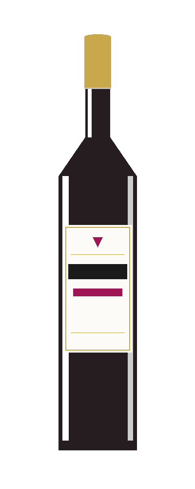
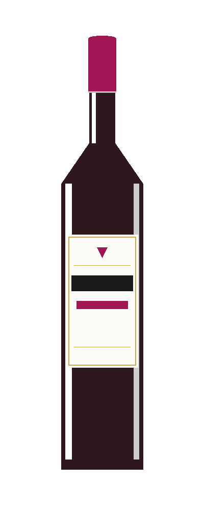
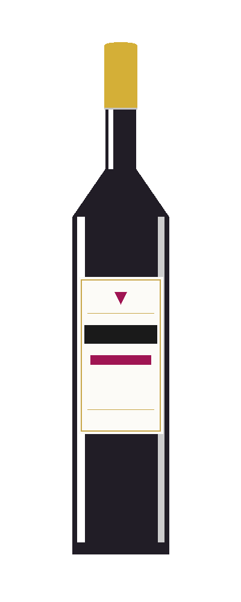
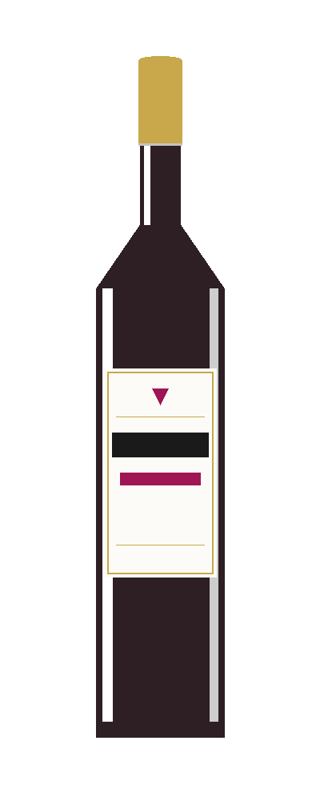
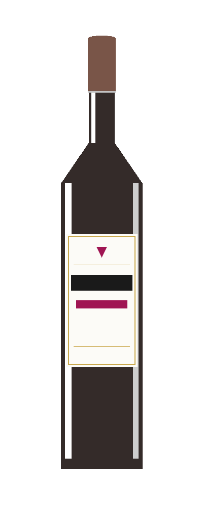
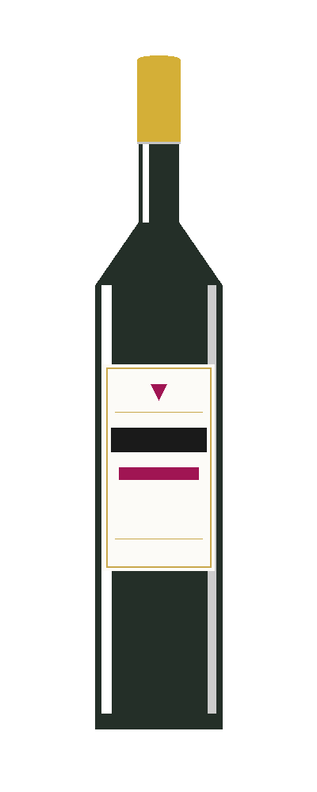
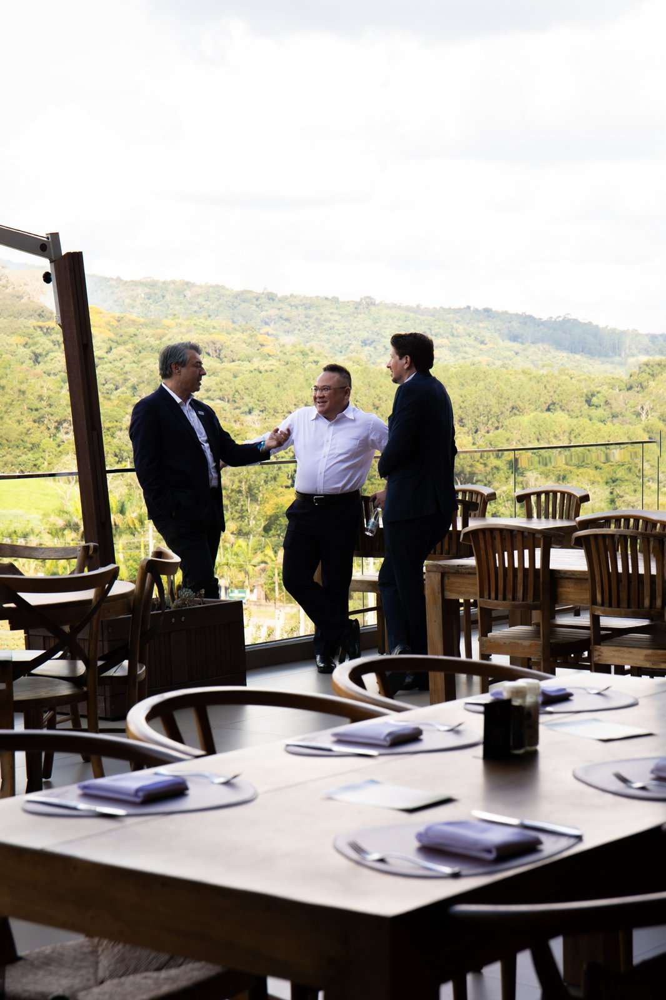

O Fogo Sagrado da Parrilla Uruguaia & a Exclusividade da Nossa Cava.
Cortes nobres sob o calor da lenha, queijos fundidos, massas artesanais, experiências para grandes marcas e uma curadoria impecável de rótulos internacionais.
100%
Lenha Nobre & Brasa Viva
+150
Rótulos Selecionados na Cava
Black Angus
Cortes Certificados
São Roque • SP
Estrada do Vinho


A Autêntica Tradição dos Parrilleros do Prata.
No Viejo Papa, localizado na paradisíaca Estrada do Vinho em São Roque, a gastronomia é tratada como um rito sagrado. Nossos mestres assadores dominam o fogo com precisão cirúrgica, utilizando lenhas selecionadas que imprimem aromas e caramelização inigualáveis a cada corte.
Mais do que uma refeição, oferecemos um refúgio acolhedor onde a arquitetura rústico-contemporânea se harmoniza com vinhos premiados e a mais refinada hospitalidade sul-americana.
Lenhas Nobres
Acácia negra e angico para defumação sutil e calor uniforme.
Carnes Certificadas
Raças britânicas Black Angus e Hereford de alto marmoreio.
Destaques da Parrilla
Uma seleção de criações assinadas pelo nosso Chef Parrillero que sintetizam a identidade gastronômica do Viejo Papa.
 Especialidade da Casa
Especialidade da Casa
Bife de Chorizo Prime
01p R$ 130 / 02p R$ 220Contrafilé nobre com capa de gordura perfeita, selado na brasa viva e fatiado no ponto exato com flor de sal. Acompanha Chimichurri e Salsa Criola.
 Corte Clássico
Corte Clássico
Assado de Tira Angus
01p R$ 130 / 02p R$ 230Corte transversal das primeiras costelas bovinas. Gordura entremeada caramelizada e osso que transmite sabor e untuosidade únicos.
 Lentamente Assado
Lentamente Assado
Paleta de Cordeiro (12h)
02p R$ 380Assada lentamente por mais de 12 horas até desmanchar ao toque do garfo. Acompanha Molho Tzatziki refrescante e Molho de Hortelã fresco.
A Carta de Vinhos do Viejo Papa
Uma curadoria exclusiva com rótulos icônicos do Novo e Velho Mundo, selecionados a dedo para harmonizar perfeitamente com a intensidade e a complexidade dos nossos cortes na brasa.

Almaviva EPU
Valle del Maipo • Cabernet Sauvignon Blend

Marqués de Murrieta
DOC Rioja • Tempranillo & Mazuelo

Baronesa P.
Valle Central • Carmenère & Syrah

Beronia Crianza
Rioja Alta • Tempranillo & Garnacha

Adobe Reserva
Valle de Casablanca • Pinot Noir

Espumante Brut
Método Tradicional • Chardonnay & Pinot
Consulte Nosso Sommelier da Casa
Harmonizações sob medida para a sua mesa, jantares harmonizados e curadoria de rótulos raros.
Cardápio Completo
Da brasa aos tachos de cobre: ingredientes de origem nobre preparados com paixão e servidos com maestria.
Eventos e Concierge VIP
Estrutura premium integrada à natureza da Estrada do Vinho para eventos corporativos, lançamentos automotivos, workshops e celebrações sob medida.
Experiência Oficial da Marca GEELY
O Viejo Papa foi o cenário escolhido para a recepção de imprensa, executivos e convidados VIP da montadora internacional GEELY. Com ampla área ao ar livre, mirante arborizado e gastronomia sob brasa viva, proporcionamos uma experiência imersiva inesquecível.



Os Ambientes do Viejo Papa
Salão nobre envidraçado, mirante com vista panorâmica e lareira acolhedora para momentos inesquecíveis.
Salão Nobre Principal
Espaço climatizado com mesas amplas, iluminação cênica e atmosfera intimista.
Mirante com Vista Panorâmica
Vista privilegiada do pôr do sol e da paisagem, ideal para jantares românticos e celebrações.
Show da Brasa Viva
Acompanhe de perto o trabalho do nosso mestre parrillero preparando os cortes em brasa aberta.
Reserve sua Mesa no Viejo Papa
Garantimos mesas posicionadas estrategicamente na Estrada do Vinho para que sua experiência gastronômica seja memorável.
Endereço Oficial
Estrada do Vinho (SPV-077), Km 4,5, nº 4901
Canguera, São Roque - SP, CEP 18131-000
Horário de Atendimento
• Segunda a Quarta: das 11:00 às 17:00
• Quinta a Sábado: das 11:00 às 22:00
• Domingo: das 11:00 às 17:00
Telefone & WhatsApp Oficial
(11) 98923-9804Solicitar Reserva VIP
Preencha seus dados para confirmação direta via WhatsApp com nosso atendimento.